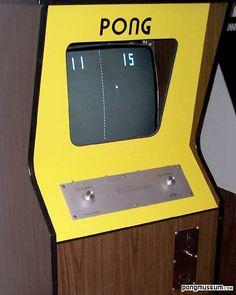
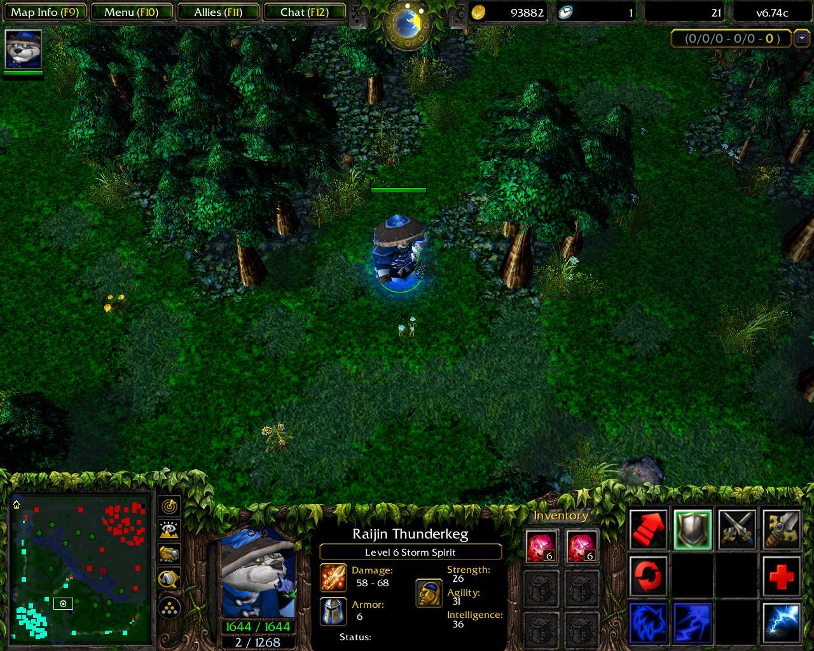

-
1958 : Premier Jeu Vidéo
Le premier jeu vidéo connu, "Tennis for Two", est créé par William Higinbotham. Il a été développé pour être joué sur un oscilloscope analogique.
-

1972 : Pong
Sortie du premier jeu vidéo commercial réussi, Pong, développé par Atari. Pong est un jeu de sport simulé représentant le tennis de table.
-

1985 : L'Ère des Consoles
Sortie de la Nintendo Entertainment System (NES), marquant le début de l'ère des consoles de salon. La NES a révolutionné l'industrie du jeu vidéo avec des classiques comme Super Mario Bros. et The Legend of Zelda.
-
1990s : L'Avènement des Jeux 3D
L'arrivée de la PlayStation de Sony et de la Nintendo 64 de Nintendo marque l'avènement des jeux en 3D. Ces consoles ont introduit des graphismes 3D avancés et des mondes immersifs.
-

Années 2000 : Jeux en Ligne
La popularité des jeux en ligne explose avec l'avènement d'Internet et des jeux massivement multijoueurs. Des titres comme World of Warcraft et Counter-Strike deviennent des phénomènes culturels mondiaux.
-
Années 2010 : Réalité Virtuelle
La technologie de la réalité virtuelle devient accessible aux consommateurs avec des plateformes comme l'Oculus Rift et le PlayStation VR. Les joueurs peuvent désormais plonger dans des mondes virtuels immersifs.